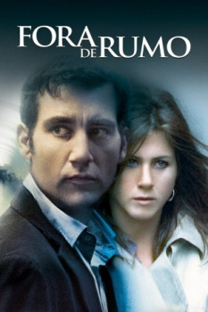

Fora de Rumo (2005)


He never saw it coming.

Avaliação (TMDb):


6.3/10 (705 votos)
Avaliação (Usuário):
Outro Título:Derailed
País:United States, 108 minutos
Idiomas falados:Inglês, Português
Gênero(s):Drama, Suspense
Diretor(s):Mikael Håfström
Codec:MPEG-2 (DVD)
Número: 1490
Sinopse:
Charles Schine (Clive Owen) e Lucinda Harris (Jennifer Aniston) são dois executivos casados, que mantém um caso secretamente. Após serem chantageados por um violento criminoso, eles precisam encontrar um meio de salvar seus casamentos e também suas próprias vidas.
Elenco:
Clive Owen, Jennifer Aniston, Vincent Cassel, Melissa George, Addison Timlin, Xzibit, RZA, Denis O'Hare, David Oyelowo, Sandra Bee
Tipo de mídia: DVD5,
Legendas: Inglês, Espanhol, Português
Alugado: Não
Tela: 2.35:1